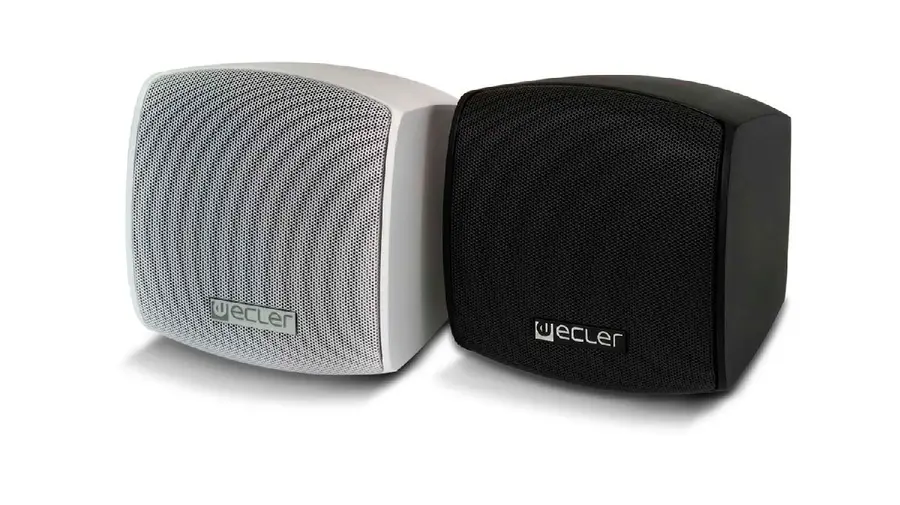

Акустические системы
Встраиваемые и корпусные громкоговорители Ecler создают бескомпромиссное качество звучания, и при этом легко вписываются как в минималистичный офисный стиль, так и в модную эстетику ночного клуба или фешенебельного ресторана благодаря особенностям дизайна и широкому диапазону стилистических решений. Акустические системы Ecler отличаются удобством монтажа и подключения; это отличный выбор, когда критичен не только звук, но и дизайн.